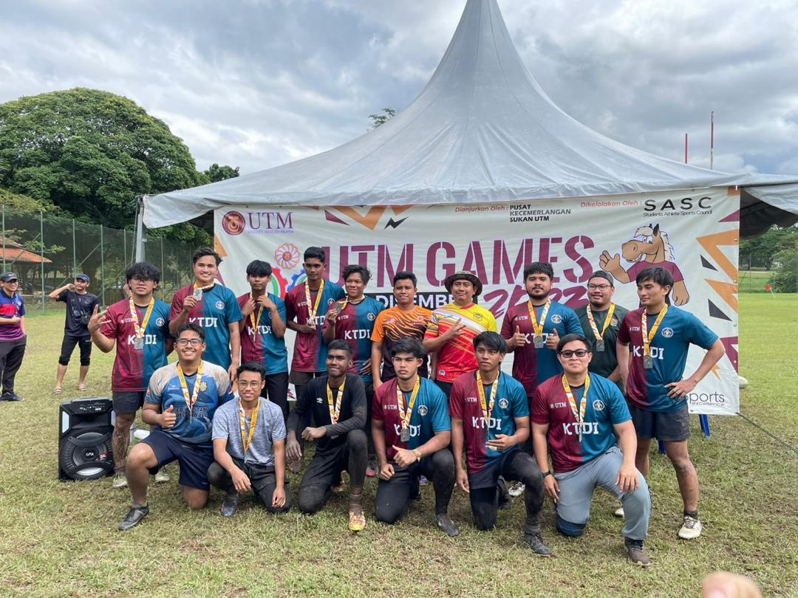
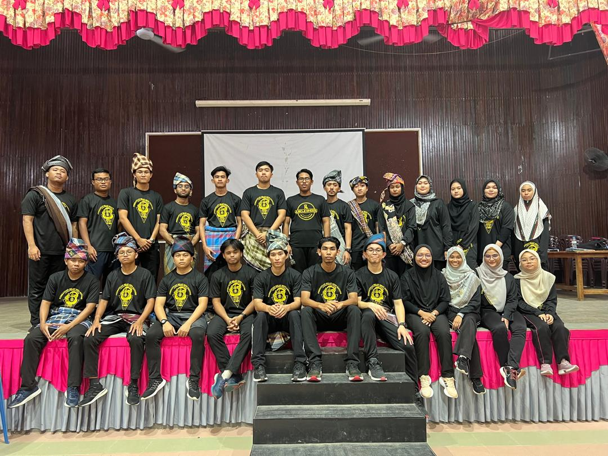
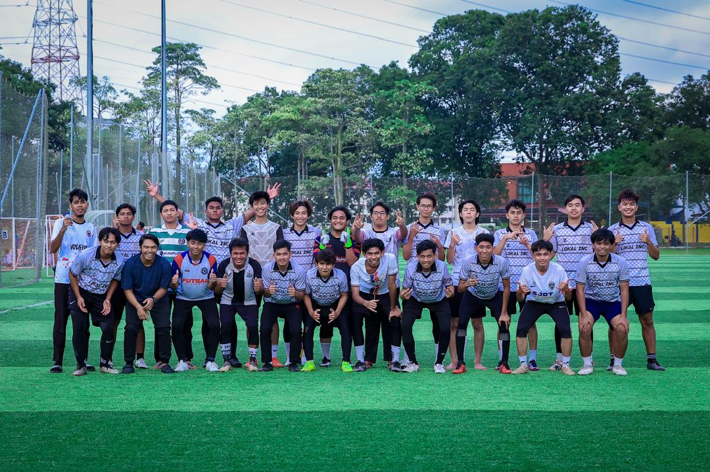

HONOUR AND AWARDS
UTM GAMES
In the UTm sports tournament that was recently held in the month of February, my rugby team, the KTDI team, and I won silver. We lost by a narrow margin of three points against UTMKL. Two of our players were hurt in the intense contest between these two groups. My pals were a terrific and powerful support system during the contest. We pledged to practice again in order to win the title, even though we were disappointed by our loss in the championship round.
Service Learning : SILAT GAYUNG
We as a group put a lot of effort into organizing a program with high school students in Mersing, Johor, as part of the service learning that was conducted. There are three days and two nights in this program. Our outstanding collaboration and seriousness have earned us the title of finest club in terms of program offerings. We were relieved that we did not receive the award at first, as we had not anticipated it. We were all shocked to hear our club's name mentioned by the host, and we all started crying with happiness. Despite the modest size of the program, everyone in this club group gets along well and is understanding of one another.
Football Tournament : Division 2
The state of Johor arranged this football match, which happened in May of last year. As a superb goalkeeper, I kept our team in the game and helped us place third. We only train for a brief period of time, yet we nevertheless put everything we have into winning this competition. The majority of our rival teams are, to be honest, very skilled and knowledgeable. We continue to think clearly to prevent a sudden decline in our spirits. We suffered a 3-2 loss to the Rhino FC team. Even though the difference is not great, we are still focused on the next competition.